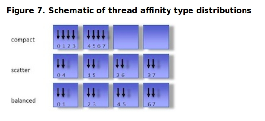

See Also: --hpx:run-hpx-main
See Also: used by find_package(HPX)
See Also: performance
See Also: what names are available? (get them with )
See Also: what names are available? (get their description with)
See Also: --hpx:list-counters (get them with ), --hpx:list-counter-infos (get their description with)
See Also: command line options

See Also: find_package(HPX)